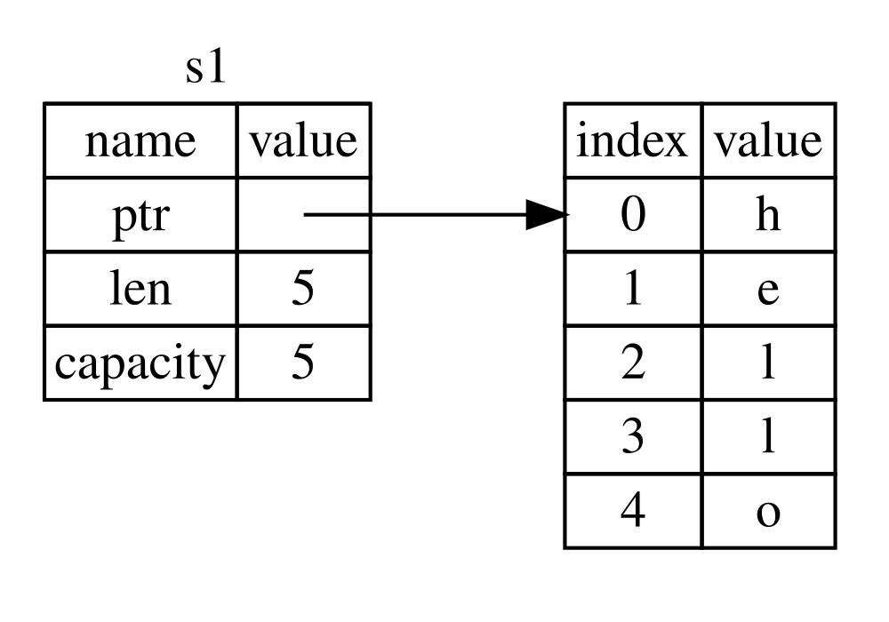
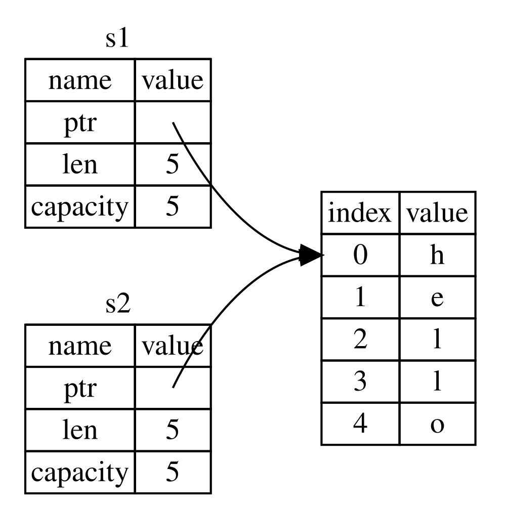
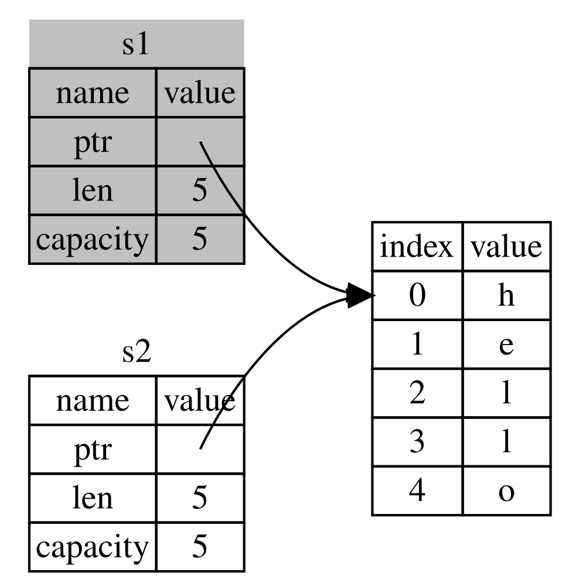
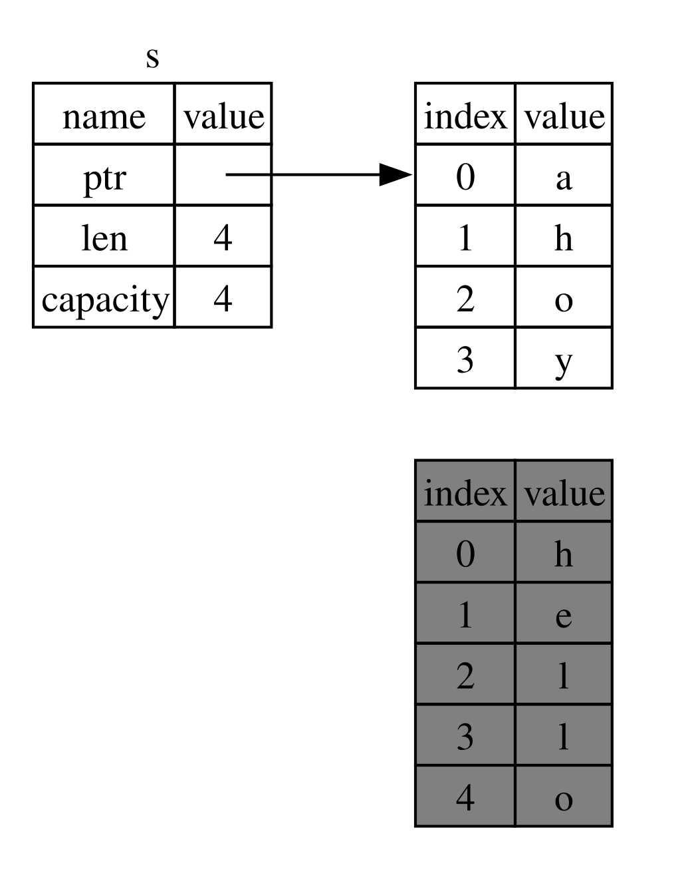

한국어 기계 번역 초안입니다. Rust 코드와 인라인 코드 예제는 공식 최신 원문 그대로 보존했습니다. 번역 용어와 세부 문장은 계속 검토합니다.
소유권이란 무엇인가?
소유권은 Rust 프로그램이 메모리를 관리하는 방식을 규정하는 일련의 규칙입니다. 모든 프로그램은 실행 중에 컴퓨터 메모리를 사용하는 방식을 관리해야 합니다. 일부 언어에는 프로그램이 실행되는 동안 더 이상 사용되지 않는 메모리를 정기적으로 찾는 가비지 컬렉션이 있습니다. 다른 언어에서는 프로그래머가 명시적으로 메모리를 할당하고 해제해야 합니다. Rust는 세 번째 접근 방식을 사용합니다. 메모리는 컴파일러가 검사하는 일련의 규칙을 가진 소유권 시스템을 통해 관리됩니다.
소유권은 많은 프로그래머에게 새로운 개념이기 때문에 익숙해지는 데 시간이 걸립니다. 좋은 소식은 Rust와 소유권 시스템의 규칙에 대해 더 많이 경험할수록 안전하고 효율적인 코드를 자연스럽게 작성하는 것이 쉬워진다는 것입니다. 계속 노력하십시오!
소유권을 이해하면 Rust를 고유하게 만드는 기능을 이해하기 위한 견고한 기반을 갖게 됩니다. 이 장에서는 매우 일반적인 데이터 구조인 문자열에 초점을 맞춘 몇 가지 예제를 통해 소유권을 배우게 됩니다.
스택과 힙
많은 프로그래밍 언어에서는 스택과 힙에 대해 자주 생각할 필요가 없습니다. 그러나 Rust와 같은 시스템 프로그래밍 언어에서는 값이 스택에 있는지 힙에 있는지에 따라 언어의 작동 방식과 특정 결정을 내려야 하는 이유가 달라집니다. 이 장의 뒷부분에서 스택과 힙과 관련하여 소유권의 일부가 설명될 것이므로, 여기서는 준비를 위해 간략히 설명합니다.
스택과 힙 모두 런타임에 코드가 사용할 수 있는 메모리의 일부이지만, 구조는 서로 다릅니다. 스택은 값을 받는 순서대로 저장하고, 반대 순서로 값을 제거합니다. 이를 마지막에 들어간 것이 가장 먼저 나간다(LIFO)라고 부릅니다. 접시 한 묶음을 생각해 보세요. 접시를 더 추가할 때는 묶음 위에 올리고, 접시가 필요할 때는 맨 위에서 하나를 꺼냅니다. 중간이나 아래에서 접시를 추가하거나 제거하면 잘 작동하지 않겠죠! 데이터를 추가하는 것을 스택에 푸시라고 하고, 데이터를 제거하는 것을 스택에서 팝이라고 합니다. 스택에 저장되는 모든 데이터는 크기가 알려진 고정된 크기여야 합니다. 컴파일 타임에 크기가 알려지지 않았거나 크기가 변할 수 있는 데이터는 대신 힙에 저장해야 합니다.
힙은 덜 조직화되어 있습니다. 힙에 데이터를 넣을 때 특정 크기의 공간을 요청합니다. 메모리 할당자는 힙에서 충분히 큰 빈 공간을 찾고, 이를 사용 중으로 표시한 다음, 해당 위치의 주소인 포인터를 반환합니다. 이 과정은 힙에 할당(allocation on the heap)이라고 불리며, 때로는 단순히 할당(allocation)이라고 줄여 부릅니다(스택에 값을 푸시하는 것은 할당으로 간주되지 않습니다). 힙에 대한 포인터는 크기가 알려진 고정된 크기이므로 스택에 저장할 수 있지만, 실제 데이터를 원할 때는 포인터를 따라가야 합니다. 식당에 앉아 있는 상황을 생각해 보십시오. 입장할 때 그룹의 인원수를 말하면, 호스트가 모두 앉을 수 있는 빈 테이블을 찾아 안내해 줍니다. 그룹 중 누군가가 늦게 도착하면, 어디에 앉았는지 물어보며 여러분을 찾을 수 있습니다.
할당자가 새로운 데이터를 저장할 장소를 찾을 필요가 없기 때문에 스택에 푸시하는 것이 힙에 할당하는 것보다 빠릅니다. 해당 위치는 항상 스택의 맨 위에 있기 때문입니다. 반면, 힙에 공간을 할당하려면 할당자가 먼저 데이터를 저장할 수 있는 충분한 공간을 찾고, 다음 할당을 준비하기 위해 부기 작업을 수행해야 하므로 더 많은 작업이 필요합니다.
포인터를 따라가야 하므로 힙의 데이터에 접근하는 것은 일반적으로 스택의 데이터에 접근하는 것보다 느립니다. 현대 프로세서는 메모리 내에서 덜 이동할수록 더 빠르게 동작합니다. 비유를 계속하자면, 여러 테이블에서 주문을 받는 식당의 서버를 생각해 보겠습니다. 한 테이블에서 모든 주문을 받은 다음 다른 테이블로 이동하는 것이 가장 효율적입니다. 테이블 A에서 주문을 받고, 테이블 B에서 주문을 받고, 다시 테이블 A로 돌아와 주문을 받고, 다시 테이블 B로 돌아가는 방식은 훨씬 느린 과정입니다. 마찬가지로, 프로세서는 힙처럼 멀리 떨어진 데이터보다 스택처럼 서로 가까운 데이터를 처리할 때 더 잘 동작할 수 있습니다.
코드가 함수를 호출하면, 함수에 전달된 값(힙의 데이터에 대한 포인터 포함)과 함수의 로컬 변수가 스택에 푸시됩니다. 함수가 종료되면 이러한 값은 스택에서 팝됩니다.
힙에서 어떤 코드가 어떤 데이터를 사용하는지 추적하고, 힙에서 중복되는 데이터의 양을 최소화하며, 사용하지 않는 힙 데이터를 정리하여 공간이 부족해지는 것을 방지하는 것은 모두 소유권이 다루는 문제입니다. 소유권을 이해하면 스택과 힙에 대해 자주 생각할 필요가 없습니다. 그러나 소유권의 주요 목적이 힙 데이터를 관리하는 것임을 알면, 소유권이 왜 그렇게 동작하는지 이해하는 데 도움이 됩니다.
소유권 규칙
먼저 소유권 규칙을 살펴 보겠습니다. 이 규칙을 설명하는 예제를 살펴볼 때 이 규칙들을 명심해 주세요.
- Rust의 각 값에는 소유자가 있습니다.
- 한 번에 한 명의 소유자만 있을 수 있습니다.
- 소유자가 범위를 벗어나면 값이 드롭됩니다.
변수 범위
이제 기본 Rust 구문을 다루었으므로 예제에 모든 fn main() { 코드를 포함하지 않습니다. 따라서 따라 해 보시는 경우, 다음 예제를 main 함수 안에 수동으로 넣어 주십시오. 이렇게 하면 예제가 좀 더 간결해져서 보일러플레이트 코드보다는 실제 세부 사항에 집중할 수 있습니다.
소유권의 첫 번째 예로 몇 가지 변수의 범위를 살펴보겠습니다. 범위는 프로그램 내에서 항목이 유효한 구역을 의미합니다. 다음 변수를 생각해 보십시오.
#![allow(unused)]
fn main() {
let s = "hello";
}s 변수는 문자열 리터럴을 참조하며, 문자열의 값은 프로그램 텍스트에 하드코딩되어 있습니다. 이 변수는 선언된 시점부터 현재 범위가 끝날 때까지 유효합니다. Listing 4-1은 s 변수가 유효한 구역을 주석으로 표시한 프로그램을 보여 줍니다.
fn main() {
{ // s is not valid here, since it's not yet declared
let s = "hello"; // s is valid from this point forward
// do stuff with s
} // this scope is now over, and s is no longer valid
}즉, 여기에는 두 가지 중요한 시점이 있습니다.
s이 범위에 들어오면 유효해집니다.- 범위를 벗어날 때까지 유효한 상태를 유지합니다.
이 시점에서 스코프와 변수의 유효 기간 관계는 다른 프로그래밍 언어와 유사합니다. 이제 이 이해를 바탕으로 String 타입을 소개하겠습니다.
String 타입
소유권의 규칙을 설명하려면, 3장의 “데이터 유형” 섹션에서 다룬 것보다 더 복잡한 데이터 타입이 필요합니다. 이전에 다룬 타입들은 크기가 정해져 있어 스택에 저장할 수 있고, 스코프가 끝나면 스택에서 제거되며, 다른 코드 부분이 다른 스코프에서 동일한 값을 사용해야 하는 경우에도 빠르고 간단하게 복사하여 새로운 독립적인 인스턴스를 만들 수 있습니다. 하지만 우리는 힙에 저장된 데이터를 살펴보고, Rust가 해당 데이터를 언제 정리하는지 어떻게 파악하는지 알아보겠습니다. String 타입은 이에 대한 훌륭한 예시입니다. String
이 절에서는 String의 소유권과 관련된 부분에 집중하겠습니다. 이러한 측면은 표준 라이브러리에서 제공하는 것이든 사용자가 직접 작성한 것이든, 다른 복잡한 데이터 타입에도 동일하게 적용됩니다. String의 소유권과 무관한 부분은 8장에서 다루겠습니다. String String 제 8 장
우리는 이미 문자열 리터럴을 확인했습니다. 문자열 리터럴은 문자열 값이 프로그램에 하드코딩된 형태입니다. 문자열 리터럴은 편리하지만, 텍스트를 사용하고자 하는 모든 상황에 적합하지는 않습니다. 그 이유 중 하나는 불변이라는 점입니다. 또 다른 이유는 코드를 작성할 때 모든 문자열 값을 알 수 없다는 점입니다. 예를 들어, 사용자 입력을 받아 저장하고 싶다면 어떻게 해야 할까요? 이러한 상황을 위해 Rust에는 String 타입이 있습니다. 이 타입은 힙에 할당된 데이터를 관리하므로, 컴파일 시점에 알 수 없는 양의 텍스트를 저장할 수 있습니다. String 함수를 사용하여 문자열 리터럴에서 from를 만들 수 있습니다. 방법은 다음과 같습니다.
#![allow(unused)]
fn main() {
let s = String::from("hello");
}더블 콜론 :: 연산자를 사용하면 from 타입 아래에 String 함수를 네임스페이스로 지정할 수 있으며, string_from와 같은 이름을 사용하는 것보다 명확합니다. 이 구문에 대해서는 5장의 “메서드” 섹션과 7장의 “모듈 트리에서 항목을 참조하는 경로” 섹션에서 모듈 네임스페이스와 함께 더 자세히 다룹니다. 메서드모듈 트리에서 항목을 가리키는 경로
이러한 종류의 문자열은 변경 가능합니다.
fn main() {
let mut s = String::from("hello");
s.push_str(", world!"); // push_str() appends a literal to a String
println!("{s}"); // this will print `hello, world!`
}자, 여기서 차이점은 무엇일까요? String는 변형할 수 있지만 리터럴은 변형할 수 없는 이유는 무엇일까요? 이 두 타입이 메모리를 다루는 방식에 차이가 있습니다.
메모리와 할당
문자열 리터럴의 경우 컴파일 타임에 내용을 알 수 있으므로, 해당 텍스트는 최종 실행 파일에 직접 하드코딩됩니다. 이것이 문자열 리터럴이 빠르고 효율적인 이유입니다. 하지만 이러한 특성은 문자열 리터럴의 불변성에서만 비롯됩니다. 안타깝게도, 컴파일 타임에 크기를 알 수 없고 프로그램 실행 중 크기가 변경될 수 있는 각 텍스트 조각에 대해 바이너리에 메모리 덩어리를 넣을 수는 없습니다.
String 타입의 경우, 가변적이고 확장 가능한 텍스트를 지원하려면 컴파일 타임에 크기를 알 수 없는 메모리를 힙에 할당하여 내용을 보관해야 합니다. 이는 다음과 같은 것을 의미합니다:
- 메모리는 런타임에 메모리 할당자에게 요청해야 합니다.
String사용이 끝나면 이 메모리를 할당자에게 반환하는 방법이 필요합니다.
첫 번째 부분은 우리가 수행합니다. String::from를 호출하면, 그 구현체가 필요한 메모리를 요청합니다. 이는 대부분의 프로그래밍 언어에서 보편적인 동작입니다.
하지만 두 번째 부분은 다릅니다. 가비지 컬렉터(GC)가 있는 언어에서는 GC가 더 이상 사용되지 않는 메모리를 추적하고 정리하므로, 우리는 이에 대해 신경 쓸 필요가 없습니다. GC가 없는 대부분의 언어에서는, 메모리가 더 이상 사용되지 않는 시점을 파악하고 요청할 때처럼 명시적으로 코드를 호출하여 메모리를 해제하는 것이 우리의 책임입니다. 이 작업을 올바르게 수행하는 것은 역사적으로 어려운 프로그래밍 문제였습니다. 만약 이를 잊으면 메모리를 낭비하게 됩니다. 너무 일찍 해제하면 잘못된 변수를 갖게 되고, 두 번 해제하면 버그가 발생합니다. 정확히 한 번의 할당과 정확히 한 번의 해제가 짝을 이루어야 합니다. allocate #정확히 1 free.
Rust는 다른 방식을 취합니다. 소유권을 가진 변수가 스코프를 벗어나면 메모리가 자동으로 반환됩니다. 다음은 문자열 리터럴 대신 String를 사용하는 Listing 4-1의 스코프 예제입니다:
fn main() {
{
let s = String::from("hello"); // s is valid from this point forward
// do stuff with s
} // this scope is now over, and s is no
// longer valid
}String이 필요한 메모리를 할당자에게 반환할 수 있는 자연스러운 시점이 있습니다. 바로 s이 스코프를 벗어날 때입니다. 변수가 스코프를 벗어나면 Rust는 우리를 위해 특별한 함수를 호출합니다. 이 함수는 drop라고 하며, String의 작성자가 메모리를 반환하는 코드를 넣을 수 있는 곳입니다. Rust는 닫는 중괄호에서 drop를 자동으로 호출합니다.
참고: C++에서는 항목의 라이프타임이 끝날 때 자원을 해제하는 이 패턴을 RAII(Resource Acquisition Is Initialization)라고 부릅니다. RAII 패턴을 사용해 본 적이 있다면 Rust의 drop 함수가 친숙하게 느껴질 것입니다.
이 패턴은 Rust 코드가 작성되는 방식에 깊은 영향을 미칩니다. 지금은 간단해 보일 수 있지만, 힙에 할당된 데이터를 여러 변수가 사용해야 하는 더 복잡한 상황에서는 코드의 동작이 예상과 다를 수 있습니다. 이제 이러한 상황을 몇 가지 살펴봅시다.
이동과 함께 상호작용하는 변수와 데이터
Rust에서는 여러 변수가 동일한 데이터와 서로 다른 방식으로 상호작용할 수 있습니다. Listing 4-2는 정수를 사용하는 예제를 보여줍니다.
fn main() {
let x = 5;
let y = x;
}x의 정수 값을 y에 할당하기이 코드는 “값 5를 x에 바인딩한 다음, x의 값을 복사해 y에 바인딩한다”는 뜻입니다. 이제 x와 y 두 변수가 있고, 둘 다 5라는 값을 가집니다. 정수는 크기가 고정된 단순한 값이므로 실제로 스택에 5 값 두 개가 저장됩니다.
이제 String 버전을 살펴 보겠습니다.
fn main() {
let s1 = String::from("hello");
let s2 = s1;
}이것은 매우 비슷해 보이므로 작동 방식이 동일하다고 가정할 수 있습니다. 즉, 두 번째 줄은 s1의 값을 복사하여 s2에 바인딩합니다. 하지만 실제로는 그렇게 일어나지 않습니다.
그림 4-1을 통해 String 내부에서 어떤 일이 일어나고 있는지 확인해 보세요. String는 왼쪽에 표시된 세 부분으로 구성되어 있습니다. 문자열 내용을 담고 있는 메모리에 대한 포인터, 길이, 그리고 용량입니다. 이 데이터 그룹은 스택에 저장됩니다. 오른쪽에는 내용을 담고 있는 힙 메모리가 있습니다.

그림 4-1: String에 "hello"이 바인딩된 s1의 메모리 표현
길이는 String의 내용이 현재 사용 중인 메모리 크기(바이트 단위)입니다. 용량은 String이 할당자(allocator)로부터 받은 총 메모리 크기(바이트 단위)입니다. 길이와 용량의 차이는 중요하지만, 이 맥락에서는 무시해도 무방합니다.
s1를 s2에 할당하면 String 데이터가 복사됩니다. 이는 스택에 있는 포인터, 길이, 용량을 복사하는 것을 의미합니다. 포인터가 가리키는 힙의 데이터는 복사하지 않습니다. 즉, 메모리에서의 데이터 표현은 그림 4-2와 같습니다.

그림 4-2: s2의 포인터, 길이, 용량의 복사본을 가진 변수 s1의 메모리 표현
이 표현은 그림 4-3과 같지 않습니다. 그림 4-3은 Rust가 힙 데이터도 복사할 경우 메모리가 어떻게 보일지를 나타냅니다. 만약 Rust가 이렇게 했다면, 힙의 데이터가 크다면 s2 = s1 연산은 런타임 성능 측면에서 매우 비효율적일 수 있습니다.

그림 4-3: Rust가 힙 데이터도 함께 복사했을 때 s2 = s1이 수행할 수 있는 또 다른 시나리오
이전에 변수가 스코프를 벗어나면 Rust가 자동으로 drop 함수를 호출하여 해당 변수의 힙 메모리를 정리한다고 설명했습니다. 하지만 그림 4-2에서 두 데이터 포인터가 동일한 위치를 가리키고 있는 것을 볼 수 있습니다. 이는 문제입니다. s2과 s1가 스코프를 벗어나면 둘 다 동일한 메모리를 해제하려고 시도합니다. 이를 이중 해제(double free) 오류라고 하며, 앞서 언급한 메모리 안전성 버그 중 하나입니다. 메모리를 두 번 해제하면 메모리 손상(memory corruption)이 발생할 수 있고, 이는 잠재적으로 보안 취약점으로 이어질 수 있습니다.
메모리 안전성을 보장하기 위해 let s2 = s1; 줄 이후로 Rust는 s1을 더 이상 유효하지 않다고 간주합니다. 따라서 s1이 스코프를 벗어날 때 Rust는 아무것도 해제할 필요가 없습니다. s1이 생성된 후 s2을 사용하려고 하면 어떤 일이 일어나는지 확인해 보세요. 작동하지 않습니다:
fn main() {
let s1 = String::from("hello");
let s2 = s1;
println!("{s1}, world!");
}Rust가 무효화된 참조를 사용하는 것을 방지하기 때문에 다음과 같은 오류가 발생합니다:
$ cargo run
Compiling ownership v0.1.0 (file:///projects/ownership)
error[E0382]: borrow of moved value: `s1`
--> src/main.rs:5:16
|
2 | let s1 = String::from("hello");
| -- move occurs because `s1` has type `String`, which does not implement the `Copy` trait
3 | let s2 = s1;
| -- value moved here
4 |
5 | println!("{s1}, world!");
| ^^ value borrowed here after move
|
help: consider cloning the value if the performance cost is acceptable
|
3 | let s2 = s1.clone();
| ++++++++
For more information about this error, try `rustc --explain E0382`.
error: could not compile `ownership` (bin "ownership") due to 1 previous error
약관을 들었을 경우 얕은 사본 그리고 깊은 복사 다른 언어로 작업하는 동안 데이터를 복사하지 않고 포인터, 길이 및 용량을 복사하는 개념은 아마도 얕은 복사본을 만드는 것처럼 들릴 것입니다. 그러나 러스트는 얕은 복사본이라고 불리는 대신 첫 번째 변수를 무효화하기 때문에 a 이동. 이 예에서, 우리는 s1
이었다. 이동됨 다음으로 s2그래서, 실제로 무슨 일이 그림 4-4에 표시됩니다.

그림 4-4: s1이 무효화된 후의 메모리 상태
이로써 우리의 문제가 해결되었습니다! 유효한 변수가 s2 하나뿐이므로, 이 변수가 스코프를 벗어나면 해당 변수만 메모리를 해제하면 됩니다.
또한 여기서 암시되는 설계 결정이 있습니다. Rust는 사용자의 데이터를 자동으로 '깊은 복사'하지 않습니다. 따라서 자동 복사는 런타임 성능 측면에서 비용이 적게 든다고 가정할 수 있습니다.
범위와 할당
이것의 역도 스코프, 소유권, 그리고 drop 함수를 통해 메모리가 해제되는 관계에 적용됩니다. 기존 변수에 완전히 새로운 값을 할당하면 Rust는 drop를 호출하여 원래 값의 메모리를 즉시 해제합니다. 예를 들어 다음 코드를 살펴보세요.
fn main() {
let mut s = String::from("hello");
s = String::from("ahoy");
println!("{s}, world!");
}우리는 먼저 변수 s를 선언하고, 값이 "hello"인 String에 바인딩합니다. 그런 다음, 값이 "ahoy"인 새로운 String을 즉시 생성하여 s에 할당합니다. 이 시점에서 힙에 있는 원래 값에는 아무것도 참조하지 않습니다. 그림 4-5는 현재 스택과 힙의 데이터를 보여줍니다:

그림 4-5: 초기 값이 완전히 대체된 후의 메모리 표현
따라서 원래 문자열은 즉시 범위를 벗어납니다. Rust는 해당 문자열에 대해 drop 함수를 실행하고 그 메모리는 즉시 해제됩니다. 마지막에 값을 출력하면 "ahoy, world!"이 됩니다.
클론을 통한 변수와 데이터의 상호 작용
스택 데이터뿐만 아니라 String의 힙 데이터를 깊이 복사하려면 clone라는 일반적인 방법을 사용할 수 있습니다. 5 장에서 메소드 구문에 대해 논의 할 것입니다. 그러나 메소드는 많은 프로그래밍 언어에서 공통적 인 특징이기 때문에 이전에 본 적이있을 것입니다.
다음은 clone 메서드가 동작하는 예시입니다.
fn main() {
let s1 = String::from("hello");
let s2 = s1.clone();
println!("s1 = {s1}, s2 = {s2}");
}이것은 잘 작동하며, 힙 데이터가 복사되는 그림 4-3에 표시된 동작을 명시적으로 생성합니다.
clone 호출을 보면 임의의 코드가 실행되고 있음을 알 수 있으며, 그 코드는 비용이 많이 들 수 있습니다. 이는 다른 일이 일어나고 있다는 시각적 지표입니다.
스택 전용 데이터: 복사
아직 이야기하지 않은 또 다른 세부 사항이 있습니다. Listing 4-2에 일부 표시된 이 정수를 사용하는 코드는 작동하며 유효합니다:
fn main() {
let x = 5;
let y = x;
println!("x = {x}, y = {y}");
}그러나 이 코드는 우리가 방금 배운 내용과 모순되는 것처럼 보입니다. clone에 대한 호출이 없지만 x은 여전히 유효하며 y로 이동하지 않았습니다.
그 이유는 컴파일 시점에 크기가 알려진 정수 같은 타입이 스택에 완전히 저장되기 때문에 실제 값의 복사본을 빠르게 만들 수 있기 때문입니다. 따라서 x 변수 y를 만든 후에도 유효하게 유지하는 것을 막을 이유가 없습니다. 다시 말해, 여기서 깊은 복사와 얕은 복사 사이에 차이가 없으므로 clone를 호출해도 일반적인 얕은 복사와 다른 동작을 하지 않으며, 생략할 수 있습니다.
Rust에는 스택에 저장되는 타입(정수처럼)에 붙일 수 있는 특별한 주석인 Copy 트레이트가 있습니다(제10장에서 트레이트에 대해 더 자세히 설명하겠습니다). 타입이 Copy 트레이트를 구현하면, 이 타입을 사용하는 변수는 이동하지 않고 단순히 복사되므로 다른 변수에 할당된 후에도 유효한 상태를 유지합니다.
Rust는 해당 타입이나 그 일부가 Drop 트레이트를 구현한 경우, 그 타입에 Copy 주석을 달지 못하게 합니다. 값이 스코프를 벗어날 때 특별한 처리가 필요하고 그 타입에 Copy 주석을 추가하면 컴파일 시 오류가 발생합니다. 타입에 Copy 주석을 추가하여 트레이트를 구현하는 방법에 대해서는 부록 C의 “Derivable Traits”를 참고하세요.
그렇다면 어떤 타입이 Copy 트레이트를 구현할까요? 확실하게 확인하려면 해당 타입의 문서를 살펴보면 됩니다. 일반적으로 단순한 스칼라 값의 집합은 Copy을 구현할 수 있지만, 메모리 할당이 필요하거나 리소스를 다루는 타입은 Copy을 구현할 수 없습니다. Copy을 구현하는 타입의 예는 다음과 같습니다.
u32와 같은 모든 정수 타입- 불리언 타입,
bool, 값true및false. f64와 같은 모든 부동 소수점 타입- 문자 타입
char Copy을 구현하는 타입만 포함하는 튜플. 예를 들어(i32, i32)은Copy을 구현하지만,(i32, String)은 구현하지 않습니다.
소유권과 함수
값을 함수에 전달하는 방식은 변수에 값을 할당하는 방식과 유사합니다. 변수를 함수에 전달하면 할당과 마찬가지로 이동 또는 복사가 일어납니다. Listing 4-3에는 변수가 스코프에 진입하고 나가는 위치를 주석으로 표시한 예제가 있습니다.
fn main() {
let s = String::from("hello"); // s comes into scope
takes_ownership(s); // s's value moves into the function...
// ... and so is no longer valid here
let x = 5; // x comes into scope
makes_copy(x); // Because i32 implements the Copy trait,
// x does NOT move into the function,
// so it's okay to use x afterward.
} // Here, x goes out of scope, then s. However, because s's value was moved,
// nothing special happens.
fn takes_ownership(some_string: String) { // some_string comes into scope
println!("{some_string}");
} // Here, some_string goes out of scope and `drop` is called. The backing
// memory is freed.
fn makes_copy(some_integer: i32) { // some_integer comes into scope
println!("{some_integer}");
} // Here, some_integer goes out of scope. Nothing special happens.s 호출 이후에 takes_ownership을(를) 사용하려고 하면 Rust는 컴파일 타임 오류를 발생시킵니다. 이러한 정적 검사는 실수를 방지해 줍니다. main에 s과(와) x을(를) 사용하는 코드를 추가하여, 어디에서 사용할 수 있는지와 소유권 규칙이 사용을 막는 곳이 어디인지 확인해 보세요.
반환 값과 스코프
반환 값도 소유권을 이전할 수 있습니다. Listing 4-4는 Listing 4-3과 유사한 주석이 달린, 값을 반환하는 함수의 예를 보여 줍니다.
fn main() {
let s1 = gives_ownership(); // gives_ownership moves its return
// value into s1
let s2 = String::from("hello"); // s2 comes into scope
let s3 = takes_and_gives_back(s2); // s2 is moved into
// takes_and_gives_back, which also
// moves its return value into s3
} // Here, s3 goes out of scope and is dropped. s2 was moved, so nothing
// happens. s1 goes out of scope and is dropped.
fn gives_ownership() -> String { // gives_ownership will move its
// return value into the function
// that calls it
let some_string = String::from("yours"); // some_string comes into scope
some_string // some_string is returned and
// moves out to the calling
// function
}
// This function takes a String and returns a String.
fn takes_and_gives_back(a_string: String) -> String {
// a_string comes into
// scope
a_string // a_string is returned and moves out to the calling function
}변수의 소유권은 항상 동일한 패턴을 따릅니다. 값을 다른 변수에 할당하면 소유권이 이동합니다. 힙에 데이터를 포함하는 변수가 스코프를 벗어나면, 해당 데이터의 소유권이 다른 변수로 이동되지 않는 한 drop에 의해 정리됩니다.
이 방식은 작동하지만, 모든 함수에서 소유권을 가져왔다가 다시 반환하는 것은 다소 번거롭습니다. 함수가 값을 사용하되 소유권을 가져가지 않기를 원한다면 어떻게 해야 할까요? 함수 본문에서 생성된 데이터를 반환하는 것 외에도, 값을 다시 사용하려면 전달한 값을 돌려받아야 한다는 점은 꽤 귀찮은 일입니다.
Rust는 Listing 4-5에 보여 주듯 튜플을 사용하여 여러 값을 반환할 수 있습니다.
fn main() {
let s1 = String::from("hello");
let (s2, len) = calculate_length(s1);
println!("The length of '{s2}' is {len}.");
}
fn calculate_length(s: String) -> (String, usize) {
let length = s.len(); // len() returns the length of a String
(s, length)
}그러나 이는 너무 많은 절차이며, 흔한 개념에 대해 지나치게 많은 작업을 요구합니다. 다행히 Rust에는 소유권을 이전하지 않고 값을 사용할 수 있는 기능이 있습니다. 바로 참조입니다.